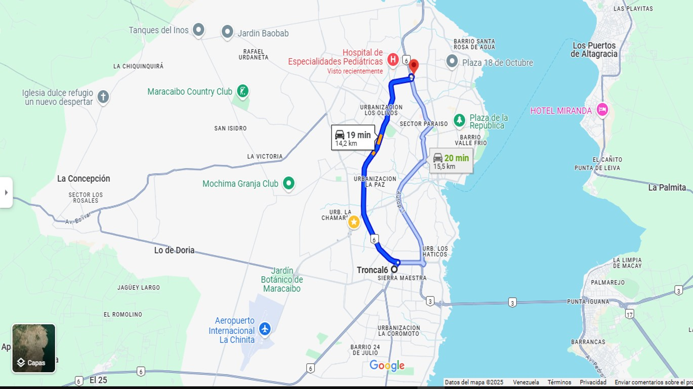
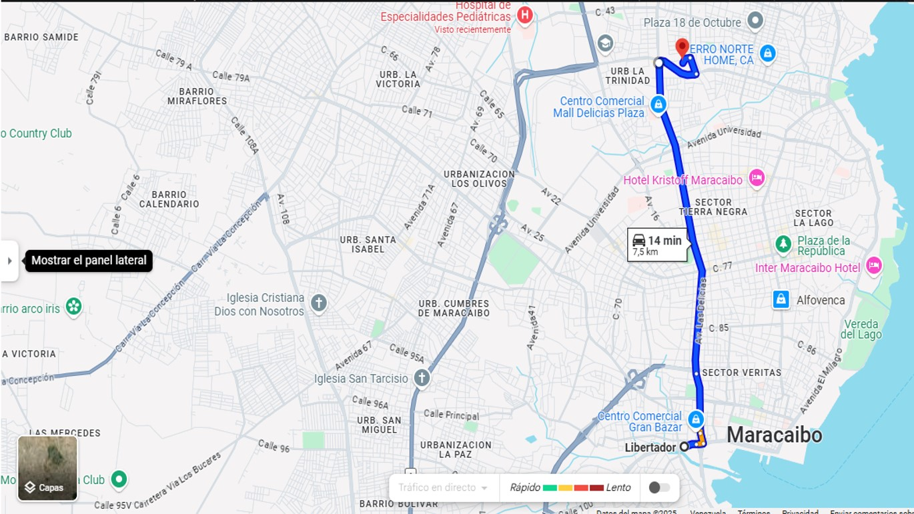
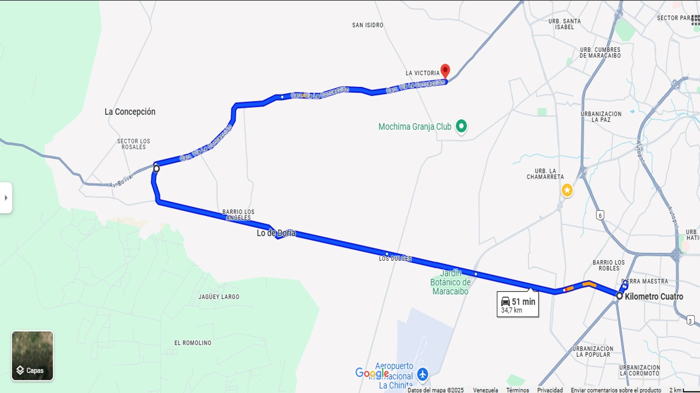
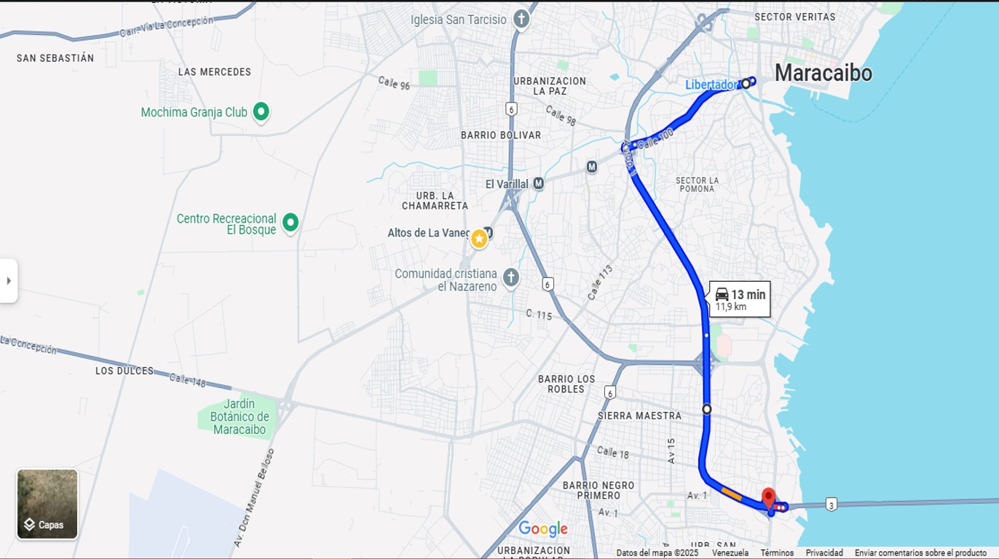

Muevete a donde quieras con nuestras rutas.
Ofrecemos diversas rutas por todo Maracaibo a un precio totalmente accesible para nuestra población, además de unidades totalmente comodas y preparadas.
La Limpia
Humberto Fernández Moran
Metro - Final libertador

Kilométro 4

Libertador

KM4 Via Perija

Terminal Simón Bolivar